The heatmaps are generated offline by experiments/build_chunks_heatmap.py using
matplotlib, saved as PNGs under html/<story>/chunks_with_recalled_segments_and_fun_out.png,
and then embedded on this page with standard <img> tags. There is no in-browser plotting here.
recall_id (ordered roughly by how many segments were recalled).segment_id (1..max).fan_out for that recall and segment, transformed to log1p.
Zeros are stored as NaN so they render as missing.plt.imshow(..., cmap="cool", aspect="auto", vmin=log1p(1)) plus a colorbar
labeled ln(fan_out).key_points.csv.mplcursors adds hover annotations; this is not
part of the static HTML page.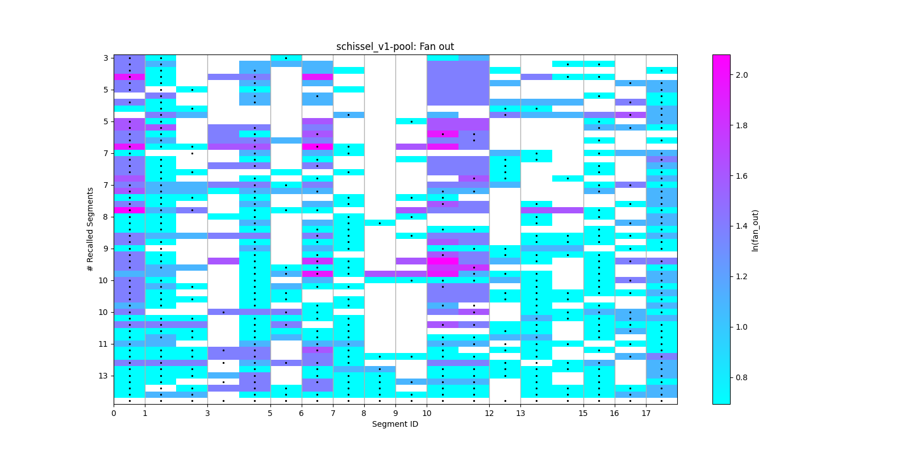
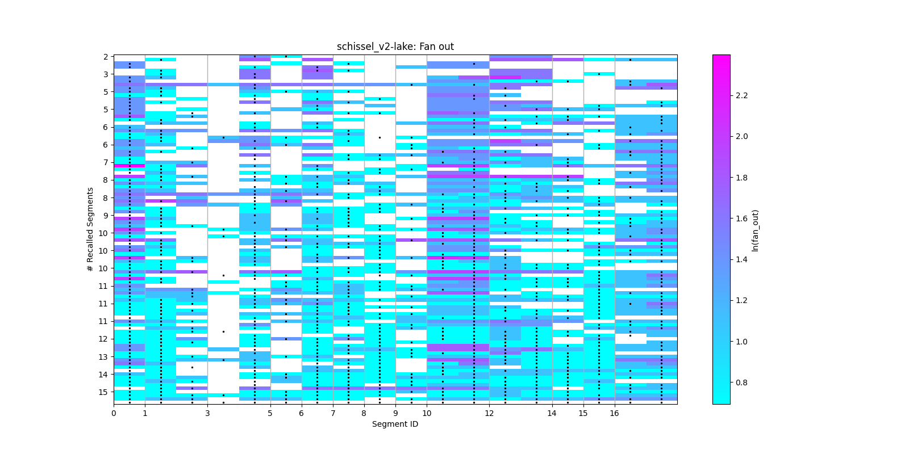
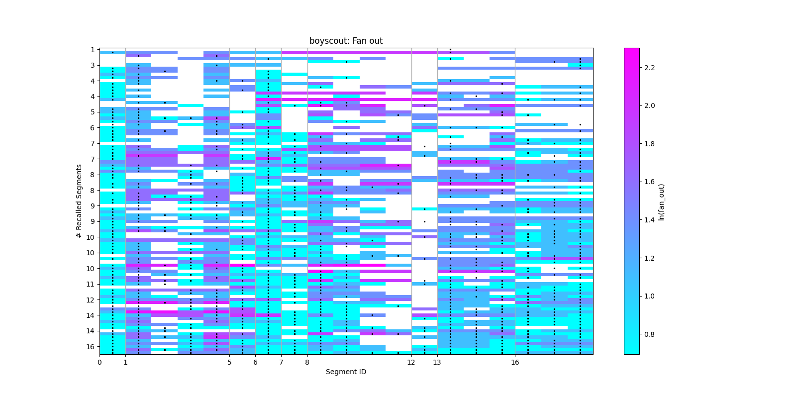
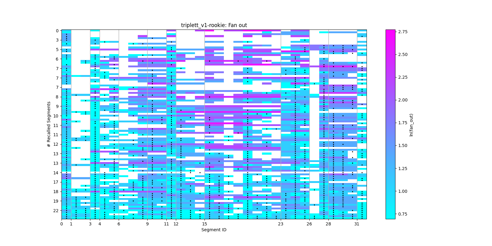
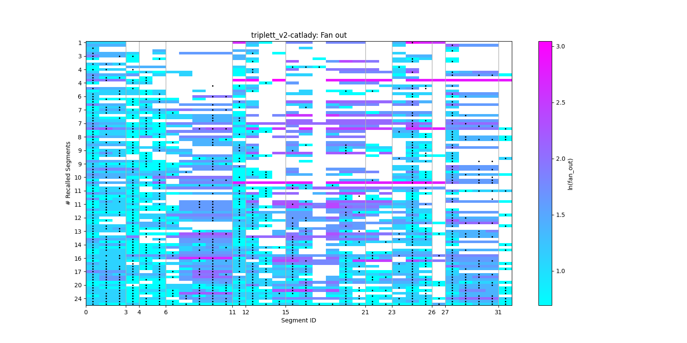
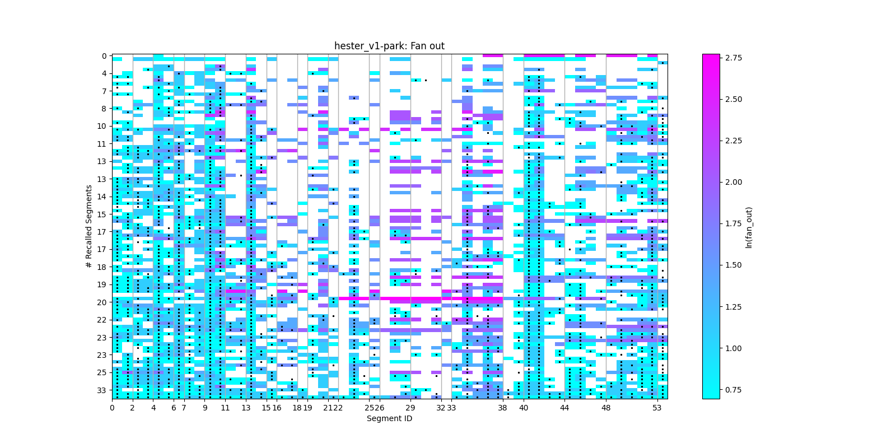
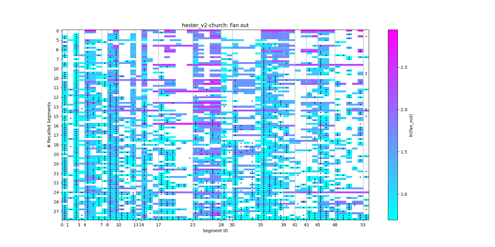
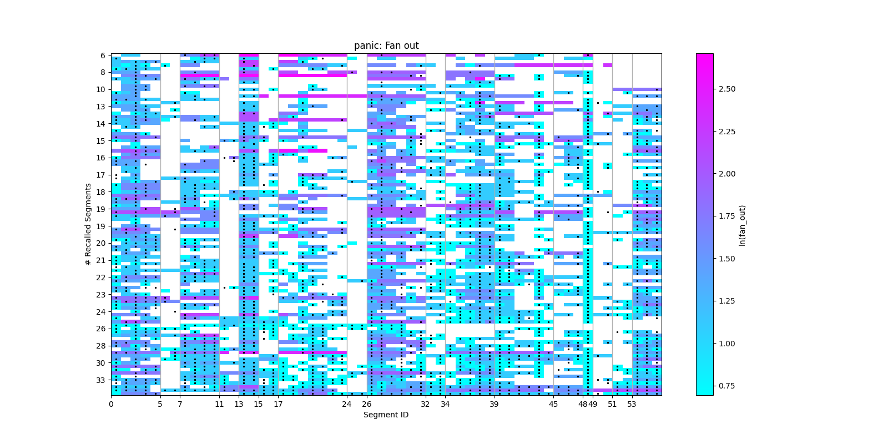
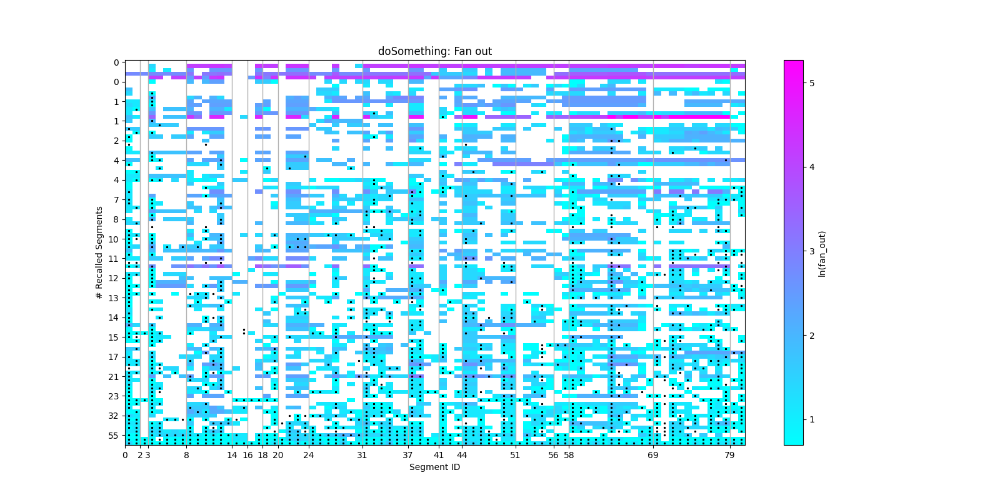
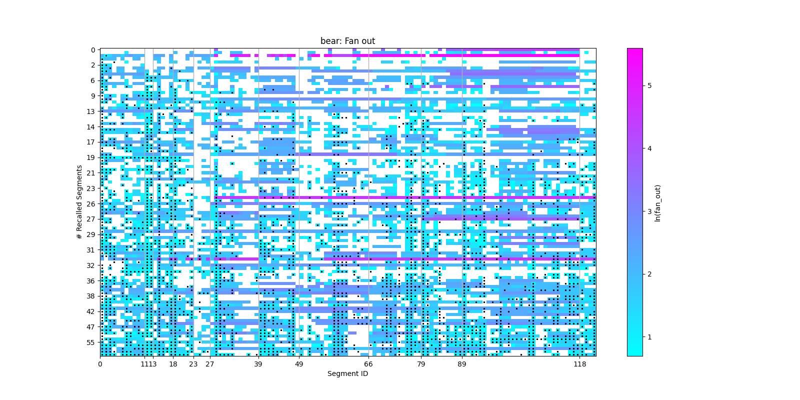
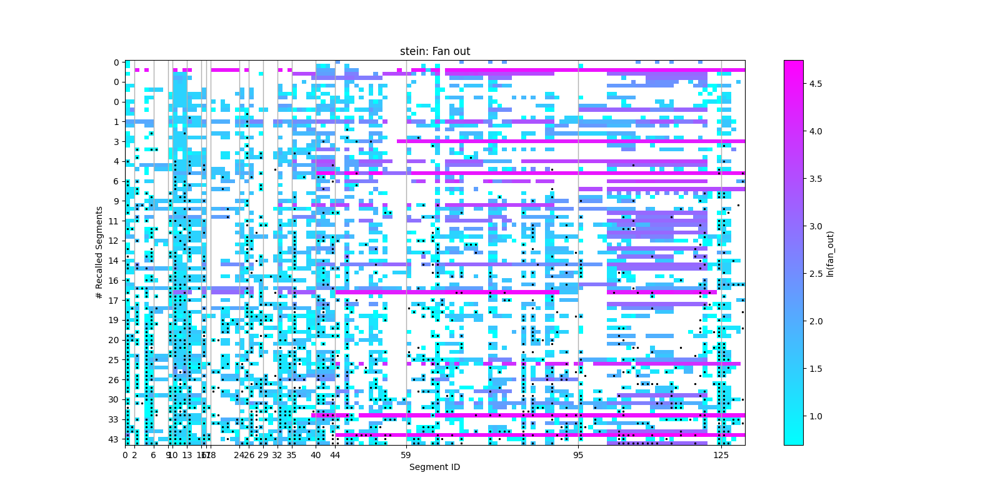
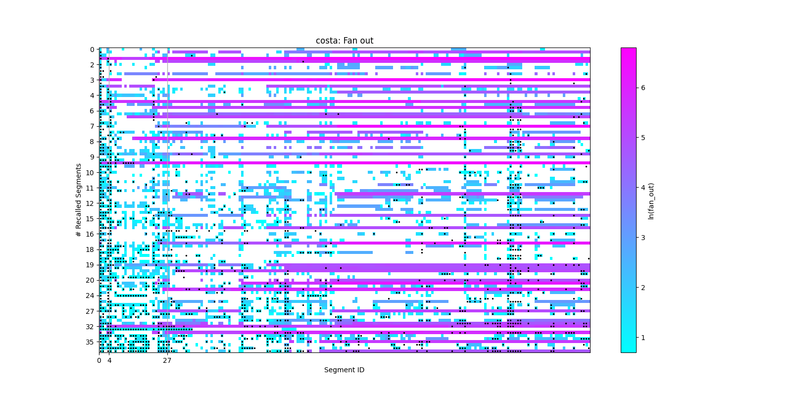